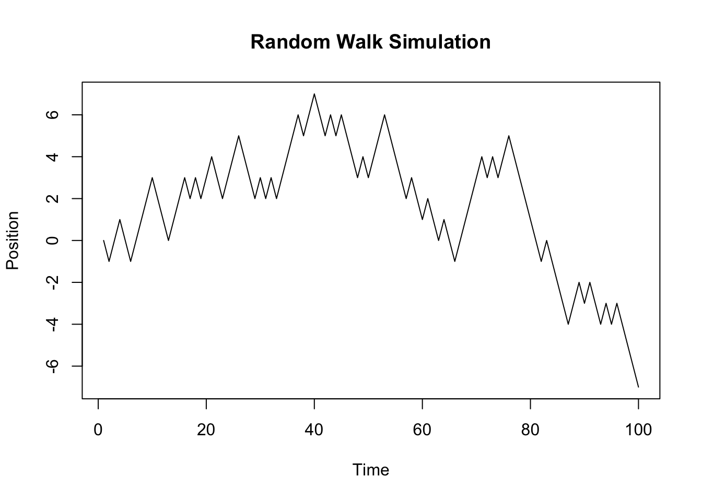
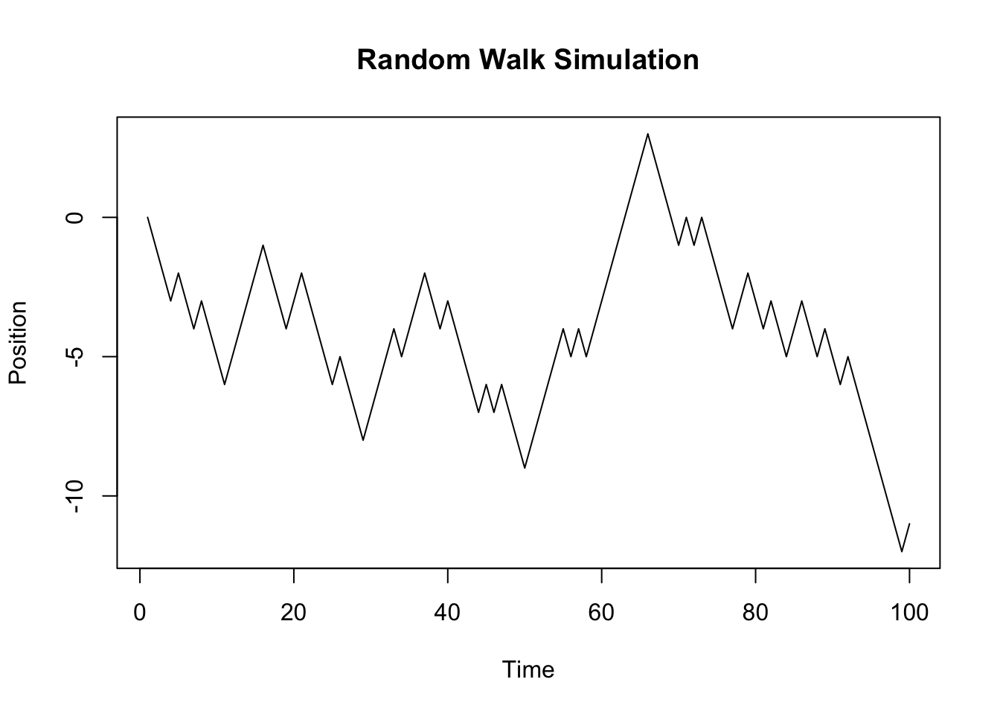
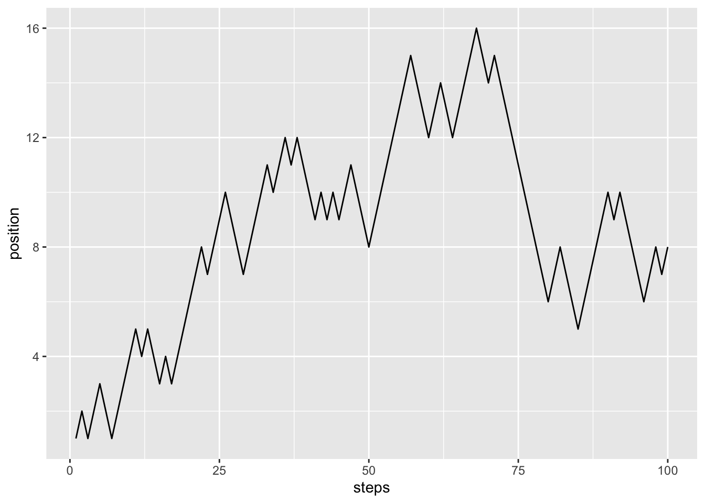
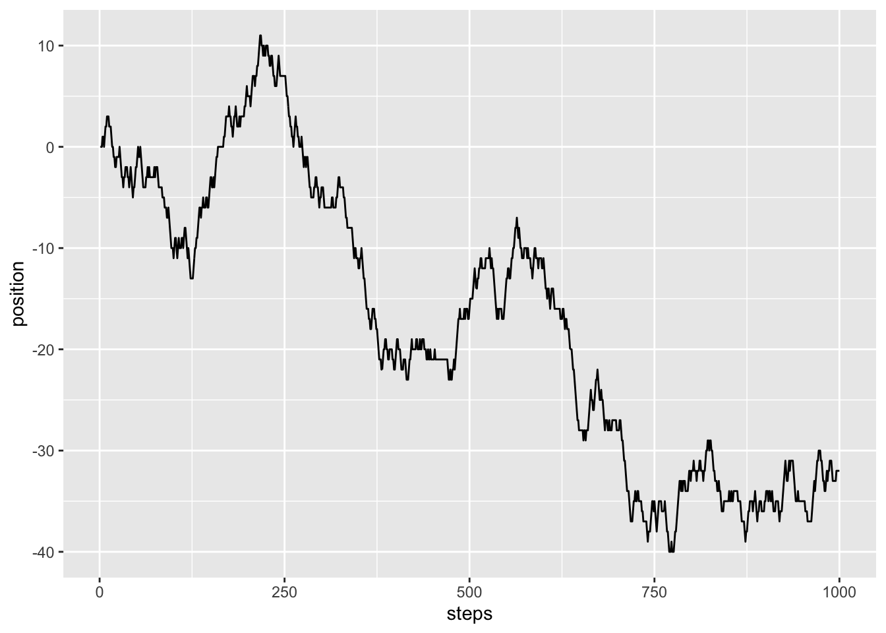

library(dplyr)
Attaching package: 'dplyr'The following objects are masked from 'package:stats':
filter, lagThe following objects are masked from 'package:base':
intersect, setdiff, setequal, unionlibrary(readr)
library(roll)
Attaching package: 'dplyr'The following objects are masked from 'package:stats':
filter, lagThe following objects are masked from 'package:base':
intersect, setdiff, setequal, unionlibrary("reticulate")
virtualenv_create(envname = "my_env", packages = c("numpy", "scipy", "pandas"))virtualenv: my_envSys.setenv(RETICULATE_PYTHON = "../../.virtualenvs/my_env/bin/python")
use_virtualenv("my_env")
py_config()python: /Users/francoisderyckel/.virtualenvs/my_env/bin/python
libpython: /Library/Developer/CommandLineTools/Library/Frameworks/Python3.framework/Versions/3.8/lib/python3.8/config-3.8-darwin/libpython3.8.dylib
pythonhome: /Users/francoisderyckel/.virtualenvs/my_env:/Users/francoisderyckel/.virtualenvs/my_env
version: 3.8.9 (default, May 17 2022, 12:55:41) [Clang 13.1.6 (clang-1316.0.21.2.5)]
numpy: /Users/francoisderyckel/.virtualenvs/my_env/lib/python3.8/site-packages/numpy
numpy_version: 1.24.2
NOTE: Python version was forced by RETICULATE_PYTHON# set parameters we will need
num_assets = 3
alpha = 0.99 # the confidence level
sum_weights = 2*244+135+315. # total value of portfolio
weights = matrix(c(2*244, 135, 315), nrow = num_assets) / sum_weights
mu = matrix(c(50/10000, 30/10000, 20/10000), nrow = num_assets)
rho = matrix(c(1, 0.5, 0.25, 0.5, 1, 0.6, 0.25, 0.6, 1), nrow = num_assets)
volat = c(0.02, 0.03, 0.01)
sigma = (diag(volat) %*% rho) %*% diag(volat)
sigma [,1] [,2] [,3]
[1,] 4e-04 0.00030 0.00005
[2,] 3e-04 0.00090 0.00018
[3,] 5e-05 0.00018 0.00010#sigma = np.dot(np.diag(volat), rho).dot(np.diag(volat))
VaR = -t(weights) %*% mu + qnorm(alpha) * sqrt((t(weights) %*% sigma) %*% weights)
VaR [,1]
[1,] 0.03064214 [,1]
[1,] 28.74232ES = -t(weights) %*% mu + sqrt((t(weights) %*% sigma) %*% weights) / (1 - alpha) * dnorm(qnorm(alpha))
ES [,1]
[1,] 0.03564525alpha = 0.99
time = 5
weights = c(1/2, 1/2)
mu = c(0, 0)
volat = c(0.01 * sqrt(time), 0.01 * sqrt(time))
rho = matrix(c(1, 0.3, 0.3, 1), nrow = 2)
sigma = (diag(volat) %*% rho) %*% diag(volat)
VaR = t(weights) %*% mu + qnorm(alpha) * sqrt((t(weights) %*% sigma) %*% weights)
VaR * 200000 [,1]
[1,] 8387.767[1] 0.01000928[1] -2.326348import numpy as np
from scipy.stats import norm
# set parameters we will need
alpha = 0.99 # the confidence level
sum_weights = 2*244+135+315
weights = np.matrix([[2*244], [135], [315]]) / sum_weights #Need to be a column vector
x = np.matrix([[2*244], [135], [315]]) / sum_weights
mu = np.matrix([[50/10000], [30/10000], [20/10000]])
volat = np.array([0.02, 0.03, 0.01])
rho = np.matrix([[1, 0.5, 0.25], [0.5, 1, 0.6], [0.25, 0.6, 1]])
sigma = np.dot(np.diag(volat), rho).dot(np.diag(volat))
VaR = -weights.T * mu + norm.ppf(alpha) * np.sqrt(weights.T * sigma * weights)
norm.ppf(0.99)2.3263478740408408matrix([[0.03564525]])0.026652142203458082.3263478740408408# Set the number of steps
n_steps <- 100
# Set the probability of moving up or down
prob_up <- 0.5
prob_down <- 1 - prob_up
# Initialize the random walk
random_walk <- numeric(n_steps)
random_walk[1] <- 0 # Starting point
# Simulate the random walk
for (i in 2:n_steps) {
# Generate a random step up or down
step <- rbinom(1, 1, prob_up)
# Update the position in the random walk
random_walk[i] <- random_walk[i-1] + (2*step-1)
}
# Plot the random walk
plot(random_walk, type="l", xlab="Time", ylab="Position", main="Random Walk Simulation")
This is one realization of a random walk.
# create a binomial model.
# You either get 1 dollars or loose 1 dollars. (or eighter you go one step up or one step down)
num_steps <- 100
prob_up <- 0.5
y <- numeric(num_steps)
y[1] <- 0
for (i in 2:num_steps) {
step <- rbinom(1, 1, prob_up)
y[i] <- y[i-1] + ((2 * step) - 1)
}
y [1] 0 -1 -2 -3 -2 -3 -4 -3 -4 -5 -6 -5 -4 -3 -2 -1 -2 -3
[19] -4 -3 -2 -3 -4 -5 -6 -5 -6 -7 -8 -7 -6 -5 -4 -5 -4 -3
[37] -2 -3 -4 -3 -4 -5 -6 -7 -6 -7 -6 -7 -8 -9 -8 -7 -6 -5
[55] -4 -5 -4 -5 -4 -3 -2 -1 0 1 2 3 2 1 0 -1 0 -1
[73] 0 -1 -2 -3 -4 -3 -2 -3 -4 -3 -4 -5 -4 -3 -4 -5 -4 -5
[91] -6 -5 -6 -7 -8 -9 -10 -11 -12 -11
Using the tidy approach. One realization of a binomial random walk
library(tibble)
library(dplyr)
library(ggplot2)
num_steps = 100
prob_up = 0.5
df <- tibble(steps = 1:num_steps,
binom_up_down = rbinom(n = 100, size = 1, prob = prob_up)) %>%
mutate(up_down = if_else(binom_up_down == 1, 1, -1),
position = cumsum(up_down))
ggplot(df, aes(x = steps, y = position)) +
geom_line()
Using a trinomial distribution now
library(purrr)
num_steps = 1000
alpha = 0.28
prob_up = alpha
prob_down = alpha
prob_same = 1 - 2*alpha
# runif(1) take a number between 0 and 1 using a uniform distribution.
# we then use the prob properties to say if it +1, 0 or -1
df = tibble(steps = 1:num_steps,
ones = rep(1, num_steps)) |>
mutate(change = map_dbl(ones, runif),
up_down = if_else(change < alpha, -1, if_else(change > 1 - alpha, 1, 0)),
position = cumsum(up_down))
ggplot(df, aes(x = steps, y = position)) +
geom_line()